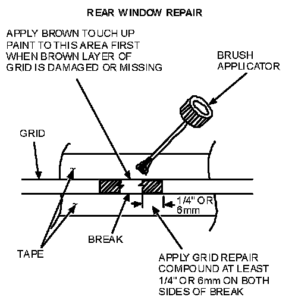
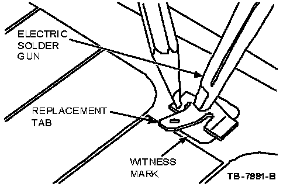
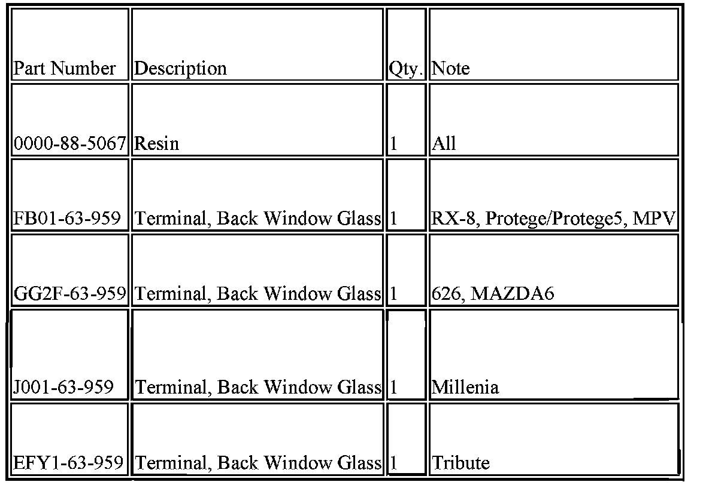
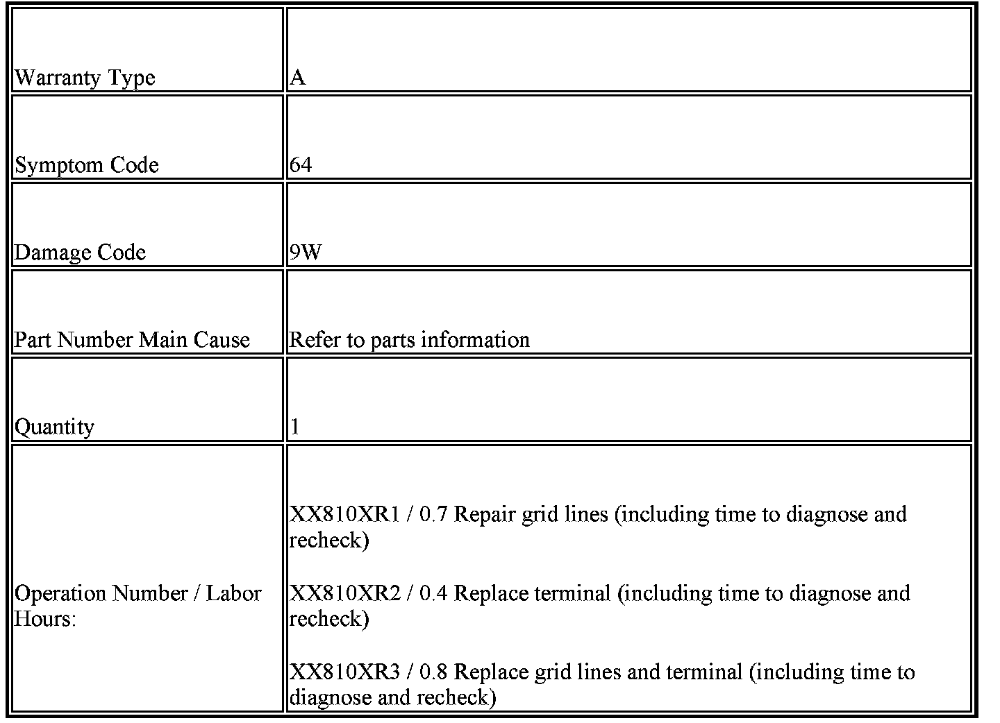

A/C - Rear Window Defroster Grid Diagnosis/Repair
09-042/04 1995-2005 MULTIPLE MODELS - REAR WINDOW DEFROSTER GRID LINE DIAGNOSIS / REPAIR AND TERMINAL TAB REPAIRNote:
This bulletin supersedes the following TSB(s): 09-004/03. Please update your records accordingly.
BULLETIN NOTE
^ This bulletin supersedes 09-004/03, issued 2/7/03. The APPLICABLE MODEL(S)/VINS, REPAIR PROCEDURE, PART(S) INFORMATION, WARRANTY INFORMATION have been revised.
APPLICABLE MODEL(S)/VINS
^ 1999-2003 Protege/Protege5
^ 1999-2005 Miata
^ 2000-2005 MPV
^ 2003-2005 MAZDA6
^ 1995-2002 Millenia
^ 1998-2002 626
^ 2001-2005 Tribute
^ 2004-2005 MAZDA3
^ 2004-2005 RX-8
DESCRIPTION
Some vehicles may exhibit inoperative electric rear window defroster grid lines, integral antenna concerns causing radio reception issues or terminal tabs pulled from the rear window glass.
Follow the diagnostic and repair procedures included in this bulletin to inspect and service rear defroster grid lines, integral antenna concerns or broken terminal tabs.
REPAIR PROCEDURE
Warrantable/Non-Warrantable Repairs
Warrantable grid line repairs typically can be identified by one inoperative grid line with a small discoloration at the area of concern, approximately the size of a pinhead. Grid line(s) that are scratched or have the silver material (which usually tarnishes brown over time) removed are not warrantable and should be addressed with the customer.
NOTE:
The grid line material is not embedded into the glass but is baked to the glass surface and consequently can be scraped off Inoperative lines may appear to the eye to be undamaged due to residue remaining on the glass and will require diagnosis with a voltmeter or 12V test lamp as explained in this article.
Examples of Non-Warrantable Grid Line Damage
^ Ice scraper damage to grid lines
^ Animal scratches on grid lines
^ Window tint film/removal of the film which damages grid lines
^ Stickers placed over grids which upon removal, removes the grid line material
^ License plate (steel type placed against the inside of back glass) which rubs on the grid line causing damage
^ Temporary license plate (paper stuck on to the inside of the back glass) which upon removal removes grid line material
^ Cargo or lumber rubbing against the glass which removes grid line material
^ Cellular phone antenna installation/removal which damages grid line material
NOTE:
An undamaged grid line will have small ridges that project above the surface of the glass and can easily be felt when running a fingertips across them. Grid lines that have been "razor bladed" will feel smooth when a fingernail is dragged across the affected area. There may be some residue left on the glass that appears to be grid material but a check with a voltmeter or 12V test lamp, as explained in this article, will confirm an open circuit.
GRID LINE REPAIR PROCEDURE
NOTE
^ Long gaps are almost always due to damage and are not warrantable, however they can be repaired. The longer the gap the more important it is to apply a minimum six (6) coats of conductive repair material with the five (5) minute dry time between each coat. Applying less coats or not allowing dry time between coats will produce repaired resistance that is greater than ohm resistance, resulting in poor defrost performance and excessive localized heating.
^ Repaired long gaps are generally not visually pleasing unless extreme care is taken when taping affected grid line areas.
^ If the brown color under the grid line is damaged or missing (this is very rare), it will be necessary to apply brown acrylic lacquer touch-up paint for color match. This paint must meet specification ESR-M2P100-C and should be applied to the glass prior to applying the rear window defroster repair compound.
Service inoperative grid lines on rear window glass using Rear Window Defroster Repair 0000-88-5067 or equivalent as follows:
Surface Preparation
1. Bring vehicle inside and warm it to 60 F (16 C) or above.
2. Clean the entire grid line service area with glass cleaner to remove all dirt, wax, grease, oil or other foreign matter. It is important that the repair area be clean and dry.
3. Lightly buff damaged area with "FINE" steel wool.
NOTE:
Do not use scrapers, sharp instruments, or abrasive window cleaners on the interior surface of the rear window glass as this may cause damage to the grid lines.
Mixing
^ The bottle of Rear Window Defroster Repair compound and touch-up paint (if needed) must be at room temperature.
^ Shake the bottle for at least one (1) minute for thorough mixing.
^ Shake frequently during use.
Application
4. Mark location of open grid on the outside of the back window glass (performed in diagnostics). Place protective covering over the package tray as necessary.
5. Using "fine line tape", mask off the area directly above and below open grid line. It is best to extend the tape 26 mm (1") beyond the concern area in both directions.
NOTE:
^ The open grid line should be at the center of the mask and tape gap must be no wider than the existing grid line.
^ Other types of tape may be used but end results of the repair may not appear as visually acceptable due to ease of application and tape edge finish.

6. Inspect the area to determine if the brown layer of the grid is missing.
^ If the brown layer of the grid is not broken or missing:
a. Apply only the silver grid repair compound to the open grid line
b. Apply the correct coating in several smooth continuous strokes (allowing five (5) minutes drying time between coats) across the open grid line area using the brush applicator in the cap.
c. Extend the service coating at least 6 mm (.25") on both sides of the open grid line area. Apply a minimum of six (6) coats of the grid repair compound.
^ If both brown and silver layers of the grid are broken or missing:
a. Apply a coating of brown lacquer touch-up paint across the open line area first.
b. Take care to paint only the area missing the color. Two (2) coats may be necessary to obtain the proper color.
c. Allow the touch-up paint to dry at least five (5) minutes between coats. Apply six (6) coats of grid repair compound.
NOTE:
The interior side of the grid lines are not painted, but due to the silver tarnishing will tend to change the grid to a gold or brown color. The repaired area will be bright silver and will also tarnish over time to match the rest of the grid.
7. After five (5) minutes of dry time of the final coat of grid repair compound, remove the tape, step outside and inspect the repaired area.
^ If the repair compound is not visible above or below the grid, proceed to Step 5. If the repair compound is visible above or below the grid, the excess can be removed.
a. Place a single-edge razor blade on the back window glass parallel to grid and scrape gently toward grid.
b. A wider/thicker line will perform better but may not be cosmetically appealing.
CAUTION:
Be careful not to damage grid line with razor blade.
8. Verify all of the grid lines function properly when finished.
Curing
The service coating will air-dry in approximately one (1) minute and the system can be energized after five minutes. Maximum hardness and adhesion occur afier approximately 24 hours.
SOLDERING TERMINAL LEADS (The following procedure does not apply to MIATA & MAZDA3)
The new terminal will cover the original terminal location, but must be placed so that the new terminal conductive areas will be on a good conductive base. This area should be cleaned with steel wool or an abrasive pad to remove grime from the buss-bar. After this, clean with glass cleaner to remove all dirt, wax, grease, oil or other foreign matter. It is important that the repair area be clean and dry and have a metallic appearance. Depending on the buss-bar condition, polishing with steel wool may be required. Please note that the entire buss-bar may be cleaned to improve appearance.
CAUTION:
^ DO NOT use any type of flame torch or flame heated soldering gun for this procedure. Testing indicated inadequate heat generation at the tip and the exhaust heat can cause damage to plastic trim parts in the area.
^ Use only an electric soldering gun with 100 watts or more of power. Before using the soldering gun, be sure to melt a small amount of resin core solder to the tip. The solder will assist in achieving better heat transfer from the soldering gun tip to the new terminal.
NOTE:
The new terminal has pre-applied solder, flux and temperature sensitive paint. The paint provides a visual indication when the terminal has reached the proper temperature to melt the solder on the terminal. When the proper temperature is achieved the temperature paint will liquefy and change color. Use terminal shown below.
1. Bring vehicle inside and warm it to 60 F (16 C) or above.
NOTE:
The rear window must be at a minimum of 60 F (16 C) before a repair is made. Place protective covering over the rear cargo area and rear bumper as necessary.
2. Place the replacement terminal over the original tab location making sure the conductive areas of the terminal makes good contact with a conductive material.
NOTE:
The replacement tab location should cover the original tab location but still allow the replacement tab to make good contact with a conductive material.

3. Hold the terminal in place with an item such as regular lead pencil at a 90 degree angle from the terminal. (Holding at other than a 90-degree angle may allow the terminal to slip when the solder liquefies).
4. Place the soldering gun tip on the top of the terminal but not on the painted areas of the tab. Energize the soldering gun and watch for the painted area of the terminal to liquefy and change color.
NOTE:
^ The paint should liquefy in approximately 25-45 seconds after heating.
^ As soon as the paint color completely changes on either side of the terminal, de-energize the soldering gun and continue to hold the terminal in place with the soldering gun and pencil for an additional thirty (30) seconds.
5. Remove the soldering gun and pencil from the terminal. The terminal should be allowed to cool for another two (2) minutes before the wiring lead is attached to the terminal.
6. Attach the electrical connector to this terminal, turn on the rear defroster, and verify operation.

PART(S) INFORMATION
The Back Window Glass Terminals are not available for Miata and MAZDA3.

WARRANTY INFORMATION
NOTE:
^ This warranty information applies only to verified customer complaints on vehicles eligible for warranty repair. Refer to the SRT microfiche for warranty term information.
^ Additional diagnostic time cannot be claimed for this repair.

Disclaimer